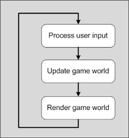
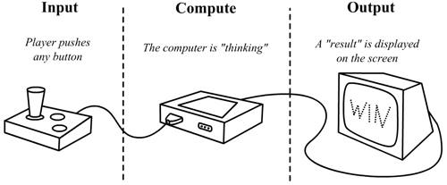
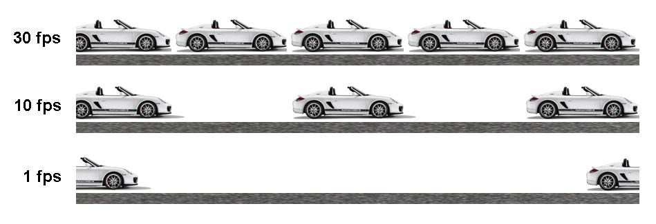
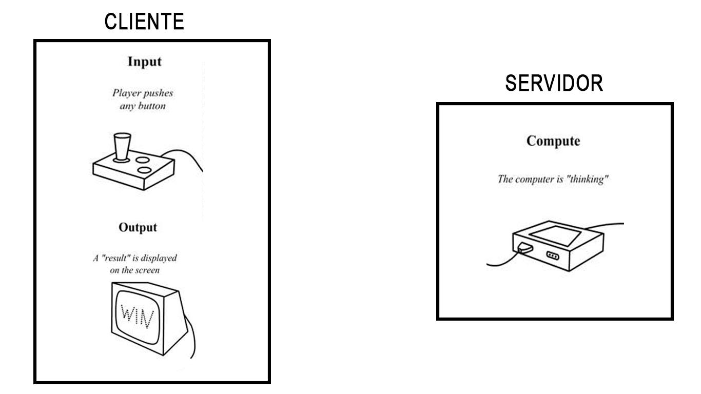
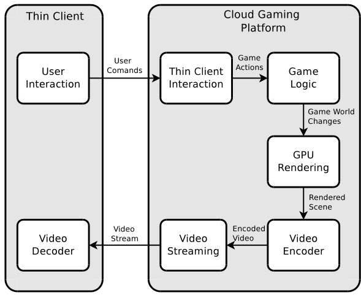
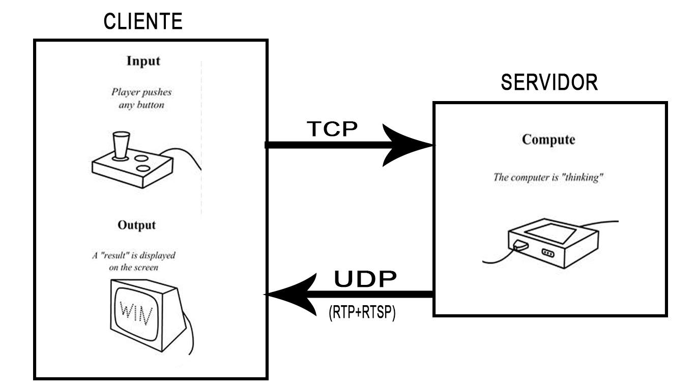
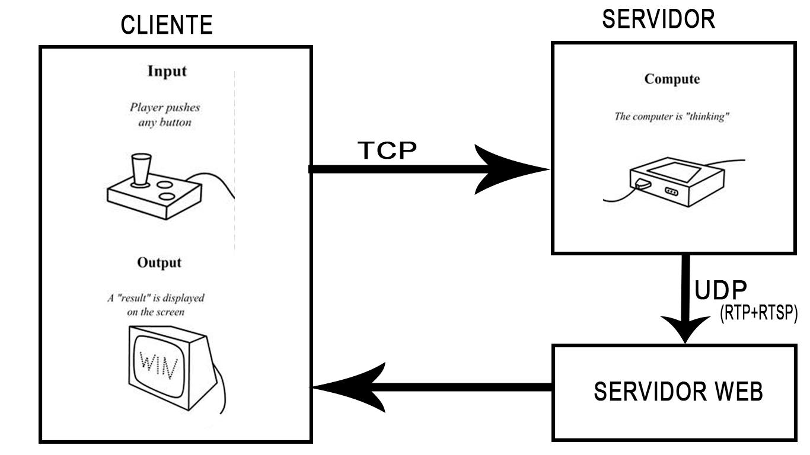
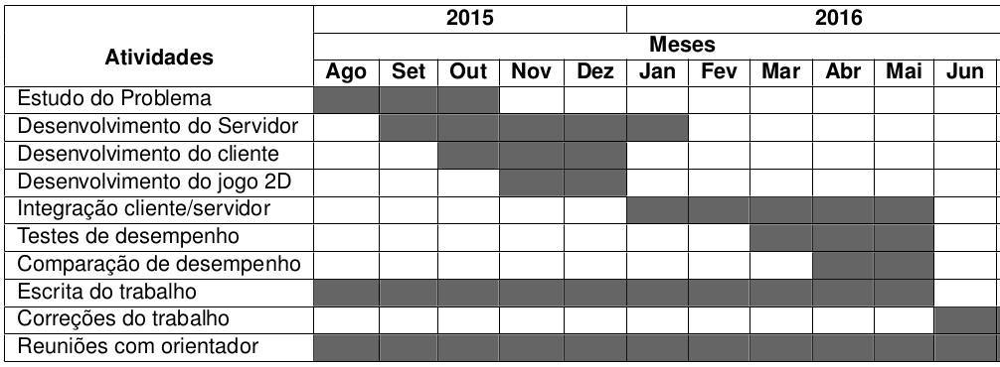

Índice
- Introdução
- Como funcionam os jogos.
- Streaming de vídeo.
- Sistemas distribuídos.
- Protocolos.
- Jogos sob demanda.
- Browser.
- Implementação/Progresso
- Trabalhos relacionados
Introdução
Jogos sob demanda
- Games on demand
- Jogos em nuvens
- Cloud gaming
- Computação em nuvens
- Cloud computing
Definição
Jogos sob demanda é um sistema onde o jogo é executado/processado por partes.O’BRIEN, R. Gaming on demand system and methodology. Google Patents, 2005.
Objetivo
A criação de um sistema de jogos sob demanda que permita a experiência para os usuários de forma compatível com a de um jogo sendo executado localmente.Como funcionam os jogos
- Input/Output
- Buffer
- Frames
- GPU (Graphics Processing Unit)
Game Loop
Forma simplificada
FPS (Frames Per Second)
Streaming de vídeo
Streaming é o método de se transmitir ou receber dados (especialmente vídeo e áudio) através de uma rede de computadores.Vídeo Codec
- Codificação/Decodificação
- Compressão de dados
Sistemas distribuídos
Sistema distribuído é uma coleção de computadores independentes trabalhando de forma que de a impressão que ele seja um único sistema.TANENBAUM, A. S. Distributed systems. 2007.
Cliente/Servidor
Jogos sob demanda
Sistemas distribuídos aplicado
Uma visão mais detalhada
Protocolos
- UDP
- TCP
- RTP/RTSP
Os protocolos utilizados
Browser
- tag img
- tag video (HTML 5)
- Flash Player
Player de vídeo

Páginas dinâmicas

Sistema
Implementação/Progresso
- Servidor
- Cliente
- Integração básica cliente/servidor
- Testes de desempenho
Cronograma
Trabalhos relacionados
Nvidia - Shield/GRID

Sony - Playstation Now

Gaminganywhere
Referências
HUANG, C.-Y. et al. Gaminganywhere: An open cloud gaming system. ACM Multimedia Systems,2013.
Shea, Ryan, et al. "Cloud gaming: architecture and performance." Network, IEEE 27.4 (2013).
http://serious.gameclassification.com/EN/about/article.html/
https://www.playstation.com/en-us/explore/psnow/devices/
http://shield.nvidia.com/
O’BRIEN, R. Gaming on demand system and methodology. [S.l.]: Google Patents, 2005. US Patent App. 11/145,845.
TANENBAUM, A. S.; STEEN, M. V. Distributed systems. [S.l.]: Prentice-Hall, 2007.
http://renansoriano.com.br/blog/conhecam-o-popcorn-time-e-porque-o-netflix-teme-sua-popularizacao/.
http://aframe.com/blog/2013/07/a-beginners-guide-to-frame-rates.
STEVENSON, A. Oxford Dictionary of English. 1. ed. [S.l.]: Oxford University Press, 2010